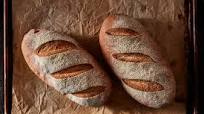

Bread

Beginners recipe to making soft delicious bread.
Recipe ingredients
- warm water
- granulated sugar
- instant OR active dry yeast,
- salt
- vegetable or canola oil
- flour
Steps
- ASSEMBLE BREAD INGREDIENTS
- DISSOLVE THE YEAST AND ACTIVATE IT BY PROOFING:This is a simple process that takes about 5 minutes. You can see a picture below what yeast looks like when it’s proofed. It’s possible to kill yeast if you use too hot of water, so aim for slightly warmer than luke-warm, or about 105°F. Combine warm water, yeast and 1 TBSP of the granulated sugar in your mixing bowl. Give it a quick stir and then let it sit for 5 minutes. You’ll begin to see the yeast puff up until it covers the entire surface of the water.
- ADD REMAINING INGREDIENTS AND MIX
- KNEAD THE BREAD
- Place your lovely smooth, elastic bread dough in an oiled bowl and cover it with plastic wrap or a clean towel. I think plastic wrap works better because it traps hot air inside and thus, my dough requires a shorter first rise. Be sure to spray the side of the plastic wrap that will touch the dough with oil!
- PUNCH DOUGH AND SHAPE IT
- Bake the bread for 30 to 40 minutes